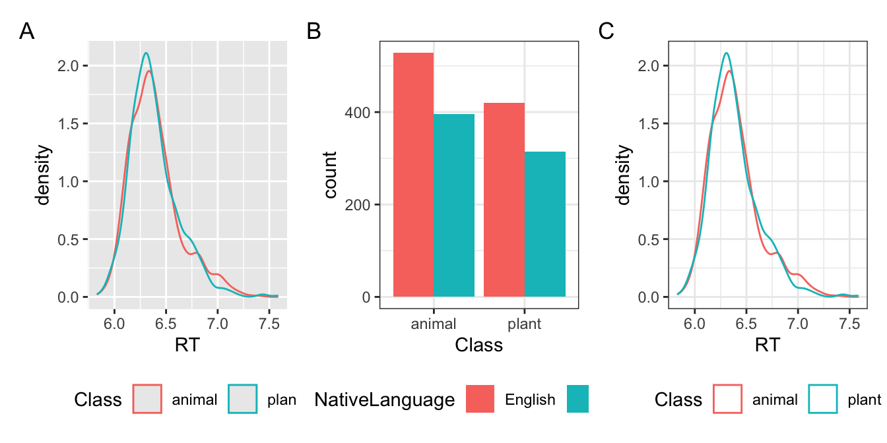
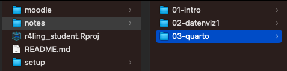
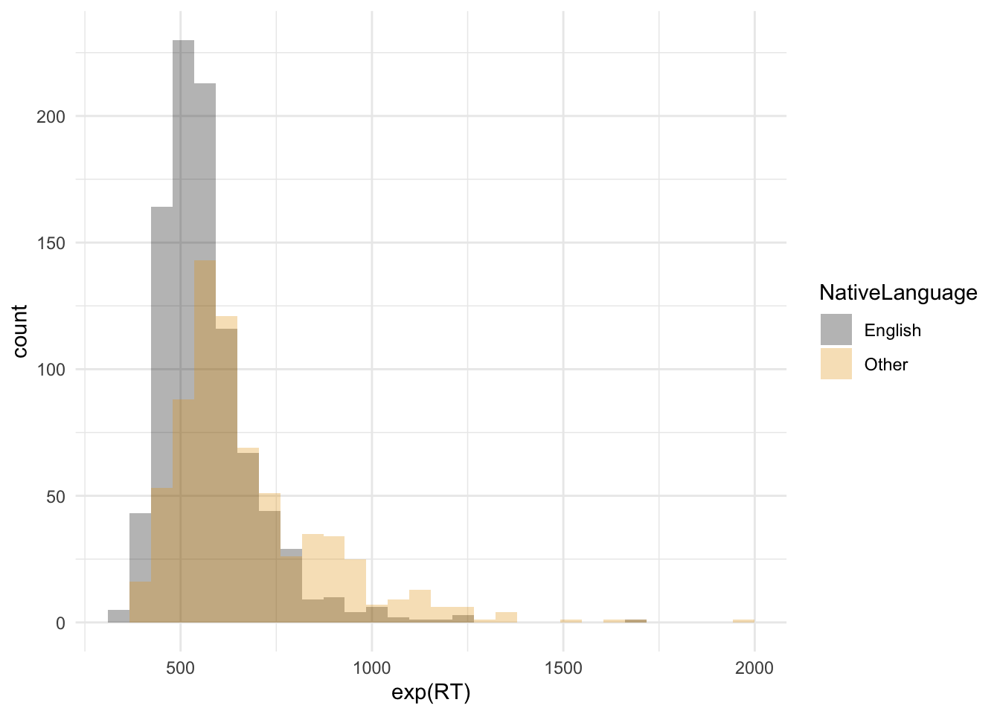
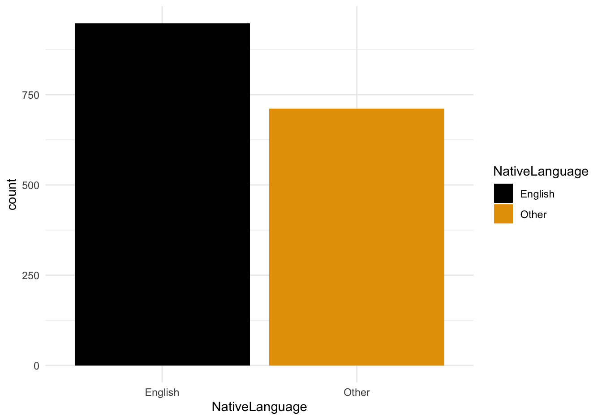

library(languageR)
library(tidyverse)
df_lexdec <- lexdec
fig_lexdec <-
df_lexdec |>
ggplot() +
aes(x = RT, colour = Class) +
geom_histogram(position = "identity", alpha = .5) +
theme_bw()3 Dynamische Berichte mit Quarto
Überblenden von Code, Ausgabe und Text
Lernziele
- lernen, was dynamische Berichte sind
- unser eigenes Quarto-Dokument erstellen
- lernen, wie man ein Quarto-Dokument bearbeitet
- lernen, wie man Code in ein Quarto-Dokument einfügt
- ein Quarto-Dokument in verschiedenen Formaten wiedergeben
Lesungen
Die Pflichtlektüre zur Vorbereitung auf dieses Thema ist Kap. 29 (Quarto) und Kap. 30 (Quarto formats) in Wickham et al. (2023).
Eine ergänzende Lektüre ist Ch. 2 (Reproducible Workflows) in Nordmann & DeBruine (2022). Nordmann & DeBruine (2022) verwendet Rmarkdown-Skripte, während wir die nächste Generation verwenden werden: Quarto. Wir sollten in Quarto immer noch in der Lage sein, genau die gleichen Dinge zu tun, wie sie in Rmarkdown vorgeschlagen werden.
Wiederholung
Letzte Woche haben wir gelernt…
- was Datenrahmen sind
- den Unterschied zwischen kategorialen und kontinuierlichen Daten
- wie man Diagramme mit
ggploterstellt - die richtige Darstellung für unsere Daten auszuwählen
Wiederholung: ggplot()
Sehen Sie sich diesen Code an. Was würde passieren, wenn wir ihn ausführen würden?
Welche Darstellung in Abbildung 3.1 wird durch den folgenden Code erzeugt?
library(languageR)
library(tidyverse)
df_lexdec <- lexdec
fig_lexdec1 <-
df_lexdec |>
ggplot() +
aes(x = RT, colour = Class) +
geom_density(alpha = .5) +
theme_bw()
Set-up
- wir müssen eine LaTeX-Distribution verwenden, um PDF-Dokumente mit Quarto zu erstellen
- LaTeX ist ein Schriftsatzsystem
- TinyTex ist eine eigene LaTeX-Distribution, mit der wir PDFs erstellen können.
- Das Paket
tinytexkann uns helfen, TinyTex zu installieren
Installation von LaTeX über tinytex
- Führen Sie den folgenden Code in der Konsole aus
- oder, wenn Sie ihn in einem Skript ausführen wollen, um zu dokumentieren, was Sie getan haben, kommentieren Sie ihn nach der Ausführung aus (d.h. fügen Sie ein
#davor)
# run this in the console
install.packages("tinytex")
tinytex::install_tinytex()Ordner für Woche 3
- Fügen Sie einen Unterordner mit dem Namen
03-quartoinNoteshinzu - Gehen Sie zu Moodle und speichern den Materialordner für ‘03 - Einführung in Quarto’ in Ihrem
moodleOrdner - Öffnen Sie das Dokument
_blatt.htmlauf Ihren Computer- Sehen Sie das Dokument an; Sie können oben rechts auf verschiedene Schaltflächen klicken. Probieren Sie es.

3.1 Quarto
- Quarto ist ein Dateityp, der dynamische Berichte erstellt
- Quarto-Dokumente sehen genauso aus wie ihr Vorgänger, Rmarkdown
3.1.1 Dynamische Berichte
- diejenigen, die Text, Code, Codeausgabe enthalten
- Quarto bietet ein “unified authoring framework” für Data Science, das Ihren Text, Ihren Code und Ihre Code-Ausgabe einschließt (Wickham et al., 2023, Kap 29.1)
- Quarto wurde entwickelt, um auf drei Arten verwendet zu werden:
- Für die Kommunikation mit Entscheidungsträgern, die sich auf die Schlussfolgerungen und nicht auf den Code hinter der Analyse konzentrieren wollen.
- für die Zusammenarbeit mit anderen Datenwissenschaftlern (einschließlich Ihnen in der Zukunft!), die sich sowohl für Ihre Schlussfolgerungen als auch für die Art und Weise interessieren, wie Sie zu ihnen gekommen sind (d. h. für den Code).
- als eine Umgebung, in der Datenwissenschaft betrieben wird, als ein modernes Labornotizbuch, in dem wir nicht nur aufzeichnen können, was wir getan haben, sondern auch unsere Gedankengänge.
3.1.2 R v. Rmarkdown v. Quarto
.R-Dateien enthalten nur (R-)Quellcode.Rmddynamische Berichte mit- R-Code (und R-Pakete)
.qmddynamische Berichte (RStudio v2022.07 oder später) mit- R-Code (und R-Pakete)
- Native Unterstützung für Python (und Jupyter-Notebooks)
- Native Unterstützung für Julia
Aufgabe 3.1: RStudio version
Beispiel 3.1
- Führen den folgenden Code in der
Konsoleaus:RStudio.Version()$version- wenn die ausgegebene Version
2022.07oder höher ist, können Sie Quarto benutzen - wenn nicht:
- wenn die ausgegebene Version
- Aktualisieren Sie RStudio:
Help > Check for updates
3.1.3 Markdown
.md-Dateien- ein Klartext-Editor-Format, das
- Formatierungselemente hinzufügt, die unabhängig von Gerät und Ausgabeformat sind (PDF, Word-Dokument, html…)
- leicht zu lesen ist
- Markdown-Dokumente sind das Bindeglied zwischen unserem Quelldokument (
.qmd) und unserer Ausgabe (z.B. PDF)
3.1.4 Folder structure
- jede
.qmdsollte (normalerweise) in einem eigenen Ordner sein- d.h. es sollten nicht mehrere
.qmdDateien im selben Ordner sein
- d.h. es sollten nicht mehrere
- dies ist nur mein Vorschlag, um die Ordner ordentlich und organisiert zu halten
- d.h., es gibt keinen technischen Grund dafür (die Dokumente laufen auch dann, wenn sie sich alle im selben Ordner befinden)
- werfen wir einen Blick auf einige meiner früheren und aktuellen Projektordner
3.2 Unsere erstes Quarto-Dokument
- letzte Woche haben wir ein R-Skript erstellt, das wir über Moodle eingereicht haben
- wir werden nun unsere erste
.qmd-Datei erstellen - von nun an wird dies die Datei sein, die wir in Moodle einreichen (kein R-Skript)
Aufgabe 3.2: erste Quarto
Beispiel 3.2
- Erstellen Sie in Ihrem R-Projekt-Ordner, in dem ihr Ihre Kursunterlagen/Notizen aufbewahren, einen neuen Ordner für Woche 3
File > New Document > Quarto Document- Geben Sie ihm einen Titel wie “Quarto - Woche 3”
- Deaktivieren Sie die Option “open with Visual Editor”.
- Schauen das neue Skript an, um mehr über Quarto zu erfahren.
- Klicken Sie auf die Schaltfläche “Render” am oberen Rand des Dokuments
- Speichern Sie das Dokument in dem Ordner für Woche 3, den Sie gerade erstellt haben.
- Was geschiehen? Vergleichen die Ausgabe mit dem Quellcode des Dokuments.
- Gehen Sie zurück zu Ihrem neuen Ordner
03-quarto- Was hat sich geändert?
3.2.1 Quarto-Grundlagen
- Quarto-Dokumente (wie Rmarkdown) enthalten drei wichtige Arten von Inhalten:
- den YAML-Header, der von
---umgeben ist - Text mit einer einfachen Formatierung oder Strukturierung wie
## Überschriftoder*Kursivschrift* - R-Code-Chunk, umgeben von
```{r} ```
- den YAML-Header, der von
```{r}
#| code-line-numbers: false
## Dies ist ein Code Chunk
1 + 1
```[1] 23.2.2 YAML
- stand ursprünglich für Yet Another Markup Language
- wurde aber in YAML Ain’t Markup Language umbenannt, um den Zweck der Sprache als datenorientiert und nicht als Dokumentauszeichnung zu betonen (laut Wikipedia)
- enthält alle Metainformationen zu Ihrem Dokument
- z.B. Titel, Autorenname
- auch Formatierungsinformationen
- z.B. Typ der Ausgabedatei
- es gibt viele Möglichkeiten der Dokumentformatierung und -anpassung, die wir in diesem Kurs nicht behandeln werden
- aber ich habe zum Beispiel viele YAML-Formatierungsoptionen im Quellcode meiner Folien
Aufgabe 3.3: YAML
Beispiel 3.3
- Ändern Sie den Titel, wenn Sie das tun möchten.
- Raten Sie, wie man einen “Untertitel” (EN: subtitle) hinzufügen könnte (Hinweis: es ist ähnlich wie beim Hinzufügen eines
title) - Fügen Sie einen Autor hinzu,
Autor: "vorname nachname"(siehe Beispiel unten) - Füge ein Inhaltsverzeichnis hinzu (EN: Table of Contents,
toc), indem duformatso änderst, dass es wie folgt aussieht:
---
title: "Quarto - Woche 3"
author: "Vorname Nachname"
format:
html:
toc: true
---- Rendern nun das Dokument. Sehen Sie Ihre Änderungen?
3.2.3 Strukturierung Ihres Dokuments
- wir können unser Dokument strukturieren mit
## Überschriften### Zwischenüberschriften#### Unter-Zwischenüberschriften, usw.
---
title: "Quarto - Woche 3"
author: "Vorname Nachname"
format:
html:
toc: true
---
## Überschrift 1
Hier ist ein Text über das Thema, das mit dieser Überschrift verbunden ist.
## Überschrift 2
Hier ist ein weiterer Text zu einem anderen Thema.
### Unterüberschrift 2.1
Dies ist ein Text über das Unterthema.
Die Bedeutung der Formatierung
Zwischenüberschriften benötigen ein Leerzeichen nach dem letzten Hashtag (##Zwischenüberschrift anstelle von ##Zwischenüberschrift), um als Überschrift gelesen zu werden. YAML erfordert außerdem einen sehr präzisen Schriftsatz. Da die Abstände in der YAML (und anderswo) so wichtig sind, möchte ich die Leerzeichen sehen und zählen können. Um dies zu tun, geht in RStudio:
- gehen zu Ihren Globalen Einstellungen (Werkzeuge > Globale Einstellungen)
- unter
Code(linke Spalte)> Display(Tab), markieren das Kästchen> Show whitespace character
Aufgabe 3.4: Überschriften
Beispiel 3.4
- Kopiern den obigen Code (Überschriften und Unterüberschriften) und ersetzen den Text in der Quarto-Vorlage.
- Ersetzen die erste Überschrift durch den Titel
Quarto- Schreiben einen Text, der Quarto beschreibt, unter die Überschrift
- Schreiben eine Unterüberschrift namens
YAML- Schreiben einen Text, der die YAML-Struktur beschreibt, die wir besprochen haben
- Erstellen eine Unterüberschrift mit dem Namen
Quarto-Struktur.- Schreiben einige Notizen darüber, wie wir ein Quarto-Dokument strukturieren können (z.B. durch das Erstellen von Überschriften)
- Finden Sie in RStudio die Schaltfläche
Outlineoben links im.qmdText Editor Fenster- Was sehent Sie, wenn Sie darauf klicken?
3.2.4 Textformatierung
- zum Formatieren von Text müssen wir die Markdown-Syntax verwenden
| Format | Markdown | Ausgabe |
|---|---|---|
| Kursivschrift |
|
Dieser Text ist kursiv |
| Fett |
|
Dieser Text ist fett |
| Subskription |
|
Dieser Text isttiefgestellt |
| Hochgestelt |
|
Dieser Text ist hochgestellt |
3.2.5 Aufzählungen
- wir können Aufzählungslisten mit Bindestrichen erstellen.
- Unteraufzählungen müssen eingerückt werden (drückt die Tabulatortaste)
- nummerierte Listen können durch einfaches Schreiben einer nummerierten Liste erstellt werden
- Unteraufzählungen müssen in nummerierten Listen doppelt eingerückt werden
- dies ist ein Aufzählungszeichen
+ dies ist ein Unterpunkt
1. Dies ist ein nummerierter Punkt
a. dies ist ein unternummerierter Punkt (beachtt den doppelten Einzug)
2. dies ist der zweite nummerierte Punkt- dies ist ein Aufzählungszeichen
- dies ist ein Unterpunkt
- Dies ist ein nummerierter Punkt
- dies ist ein unternummerierter Punkt (beachtt den doppelten Einzug)
- dies ist der zweite nummerierte Punkt
Aufgabe 3.5: Aufzählungen
Beispiel 3.5
- Fügen Ihrem
.qmdDokumententext eine Textformatierung hinzu. - Fügen eine Aufzählungsliste hinzu
- Fügen eine nummerierte Liste hinzu
- Rendern Sie das Dokument. Hat es geklappt?
3.3 Codierung in Quarto
- Der große Vorteil von dynamischen Berichten ist die Integration von Text und Code
- Vorletzte Woche haben wir gelernt, wie man einfache mathematische Berechnungen in R durchführt.
- wie würden wir R-Befehle in ein
.qmd-Dokument einfügen?- Inline-Code (Code, der innerhalb einer Textzeile ausgeführt wird)
- Code-Chunke (ein Code-Chunk, der nicht in Text enthalten ist)
3.3.1 Code-Chunks
- Code Chunks sind zwischen
```{r}und```eingebettet. - eine schöne Tastenkombination:
Cmd-Option-I(Mac) oderStrg-Alt-I(PC)
```{r}
#| eval: false
## Addition
4+6
```- ihr könnt den Code in Ihrer RStudio-Sitzung ausführen, indem ihr:
- auf das kleine grüne Dreieck oben rechts im Chunk klickt
- die Tastenkombination
Cmd/Strg-Enterverwendt, um eine einzelne Code-Zeile auszuführen (je nachdem, worauf der Cursor steht) - der Tastenkombination
Cmd/Strg-Shift-Enterbenutzt, um den gesamten Code-Chunk auszuführen (falls es mehrere Befehle innerhalb eines einzelnen Abschnitts gibt)
Aufgabe 3.6: Code-Chunks
Beispiel 3.6
- Füge einen Code Chunk zu deiner
.qmdDatei hinzu- Füge einige mathematische Operationen ein (Addition, Subtraktion, etc)
- Fügt informative Anmerkungen zu Ihrem Code hinzu (z.B.
## Addition)
- Füge einen Text unter deinem Code-Chunk hinzu, der beschreibt, was der obige Code erreicht hat.
- Rendern Sie das Dokument. Hat es geklappt?
Erinnerung! Überschriften und Code-Anmerkungen
Denken Sie beim Schreiben von Notizen/bei der Bearbeitung von Übungen im Unterricht daran, informative Überschriften/Unterüberschriften zu erstellen! Auf diese Weise wird das Dokument strukturiert und übersichtlich, wenn ihr-in-der-Zukunft (oder ich) darauf zurückblickt.
Überschriften/Zwischenüberschriften strukturieren das gesamte Dokument. Code-Anmerkungen beschreiben, was bestimmte Teile des Codes bewirken (und warum). Beide beginnen mit einem Hashtag + Leerzeichen (# ), aber Überschriften stehen außerhalb eines Codeabschnitts, während Codeanmerkungen innerhalb eines Codeabschnitts erscheinen.
Tipp: Klicken Sie auf die Schaltfläche “Outline” oben rechts im Texteditor-Fenster. Was zeigt sie an?
3.3.2 Code-Chunk-Optionen
- wir können die Ausführung von Code-Chunken steuern
- wir wollen nicht immer unseren Code in einem Bericht wiederholen
- wir können dies in jedem Code-Chunk mit
#| echo: trueoderfalsesteuern
- wir können dies in jedem Code-Chunk mit
- wir wollen nicht immer unseren Code in einem Bericht ausführen lassen
- wir können dies in jedem Code-Chunk mit
#| eval: trueoderfalsesteuern
- wir können dies in jedem Code-Chunk mit
- Dies würde wie folgt aussehen:
```{r}
#| eval: true
## Addition
4+6
```[1] 10- Wichtig ist, dass die Codechunk-Optionen:
- mit
#|beginnen, mit einem Leerzeichen dahinter und keinem Leerzeichen davor - direkt unter
```{r}platziert werden
- mit
Aufgabe 3.7:
c()
Beispiel 3.7
- Erinnern Sie sich, dass wir letzte Woche die Funktion
c()(EN: concatenate) gesehen haben, die mehrere Werte kombiniert (z.B.mean(c(3,4,25))ergibt den Mittelwert von 3,4 und 25) - In einem Code-Stück: Erstellen sie ein Objekt, das eine Liste von Zahlen enthält (z.B.
Objektname <- c(...)) - Berechnen Sie den Mittelwert dieser Zahlen, indem Sie nur den Objektnamen verwendt.
- Speichern Sie den Mittelwert dieser Zahlen als ein Objekt
- Rendern Sie das Dokument und seht sich den Abschnitt mit Ihrem Code-Chunk an.
- Ändern Sie nun im Quellcode die Chunk-Einstellungen auf
echo: falseund rendern das Dokument. Was ändert sich? - Setzen nun
echo: true, abereval: false. Rendern das Dokument. Was ändert sich?
- Ändern Sie nun im Quellcode die Chunk-Einstellungen auf
3.4 Plots in Quarto
- Ein großer Vorteil der gerenderten Quarto-Dokumente besteht darin, dass wir unsere Abbildungen zusammen mit den Textbeschreibungen anzeigen können
- Lassen Sie uns versuchen, eine Handlung von letzter Woche in unserem neuen Quarto-Dokument zu reproduzieren
3.4.1 Set-up
- unsere Pakete in einen Codechunk laden:
tidyverse,languageR, undggthemes
```{r}
## Pakete laden
library(tidyverse)
library(languageR)
library(ggthemes)
```- unsere Daten in einen separaten Codechunk laden (am besten ist es, einen einzigen Codechunk für einen einzigen Zweck zu verwenden)
```{r}
## Daten laden
df_lexdec <- lexdec
```3.4.2 Plots in Quarto
- Erstellen Sie jetzt einfach einen neuen Codechunk, der einen Code von letzter Woche enthält
- wir speichern es als Objekt mit dem Namen
fig_lexdec_hist:
### histogram of reaction times by native language
ggplot(data = df_lexdec) +
aes(x = exp(RT), fill = NativeLanguage) + ### set aesthetics
geom_histogram(position = "identity", alpha = 0.3) +
scale_fill_colorblind() + ### make fill colorblind friendly
theme_minimal() ### set plot theme
3.4.3 Plots drucken
- Erinnern Sie sich an die letzte Woche: Wenn Sie einen Plot benennen, wird er nur gedruckt, wenn Sie den Namen des Objekts eingeben
- wenn Sie den Plot nicht als Objekt speichern, wird er gedruckt, wenn Sie den Code ausführen, der den Plot erzeugt
- Wenn Sie den Plot als Objekt speichern, wird er nicht gedruckt, wenn Sie den Code ausführen.
- In diesem Fall müssen Sie den Objektnamen ausführen, um zu sehen, was unter diesem Namen gespeichert ist
- Dies gilt für alle Arten von Objekten, nicht nur für Diagramme!
Aufgabe 3.8: Plots in Quarto
Beispiel 3.8
- Einen neuen Codeabschnitt erstellen und das Balkendiagramm von letzter Woche erzeugen, aber als Objekt speichern
- In einem separaten Codechunk nur den Objektnamen dieses Diagramms angeben
- Rendern Sie das Dokument, um zu sehen, wo die Abbildung gedruckt wurde.
fig_lexdec_l1 <-
ggplot(data = df_lexdec) +
aes(x = NativeLanguage, fill = NativeLanguage) +
## add the geom:
geom_bar() +
scale_fill_colorblind() + ## add colourblind colours
theme_minimal()fig_lexdec_l1
3.5 Ausgabeformate
- es gibt mehrere Ausgabeformate, die wahrscheinlich nützlichsten sind:
html(default)pdfrevealjs(Folien)docx
3.5.1 Ausgabeformate
- wenn wir das Dokument rendern:

Andere Verwendungen
Quarto kann für eine Vielzahl von Zwecken verwendet werden, wie z. B.:
- Websites/Blogs
- Notizen machen
- Dokumentieren von allem, was mit Code zu tun hat, um die Reproduzierbarkeit zu verbessern
- Tipps zum Arbeitsablauf
- Bearbeitung von csv-Dateien (z. B. Stimuluslisten)
Aufgabe 3.9: Ausgabeformate
Beispiel 3.9
- Ersetzt
htmlin der YAML durchrevealjs. Rendert das Dokument.- Schauen Sie den Ordner für die Notizen dieser Woche an. Welche Dateien seht?
- Setzt nun
formataufpdf. Rendert das Dokument.- Läuft es?
- Versuche,
pdfdurch den Buchstabenlzu ersetzen. R schlägt eine Vervollständigung vor, welche ist es? Wähle sie aus und rendere das Dokument.
- Setzt das Format wieder auf
html. Rendert das Dokument. - Geht zurück zu Ihrem Ordner mit den Notizen dieser Woche. Welche Dateien seht?
- Ist die Ausgabe von
revealjsdort?
- Ist die Ausgabe von
Lernziele 🏁
Wir haben…
- gelernt, was dynamische Berichte sind ✅
- unser eigenes Quarto-Dokument erstellt ✅
- gelernt, wie man ein Quarto-Dokument bearbeitet ✅
- gelernt, wie man Code in ein Quarto-Dokument einfügt ✅
- ein Quarto-Dokument in verschiedenen Formaten wiedergebt ✅
3.6 Extra: Reproduzierbarkeit in Quarto
- die Paketversionen mit
sessionInfo()ausgeben- wenn ich ein neues Dokument beginne, ist eines der ersten Dinge, die ich tue, eine Kopfzeile
## Session Infoam unteren Ende hinzuzufügen, mit dem folgenden:
- wenn ich ein neues Dokument beginne, ist eines der ersten Dinge, die ich tue, eine Kopfzeile
sessionInfo()
Aufgabe 3.10: Session Info
Beispiel 3.10
- fügt eine “Session Info” Abschnitt am Ende des Dokuments hin
Session Info
Hergestellt mit R version 4.3.0 (2023-04-21) (Already Tomorrow) und RStudioversion 2023.3.0.386 (Cherry Blossom).
sessionInfo()R version 4.3.0 (2023-04-21)
Platform: aarch64-apple-darwin20 (64-bit)
Running under: macOS Ventura 13.2.1
Matrix products: default
BLAS: /Library/Frameworks/R.framework/Versions/4.3-arm64/Resources/lib/libRblas.0.dylib
LAPACK: /Library/Frameworks/R.framework/Versions/4.3-arm64/Resources/lib/libRlapack.dylib; LAPACK version 3.11.0
locale:
[1] en_US.UTF-8/en_US.UTF-8/en_US.UTF-8/C/en_US.UTF-8/en_US.UTF-8
time zone: Europe/Berlin
tzcode source: internal
attached base packages:
[1] stats graphics grDevices utils datasets methods base
other attached packages:
[1] ggthemes_4.2.4 magick_2.7.4 patchwork_1.1.3 lubridate_1.9.2
[5] forcats_1.0.0 stringr_1.5.1 dplyr_1.1.3 purrr_1.0.2
[9] readr_2.1.5 tidyr_1.3.0 tibble_3.2.1 ggplot2_3.4.3
[13] tidyverse_2.0.0 languageR_1.5.0
loaded via a namespace (and not attached):
[1] gt_0.9.0 sass_0.4.8 utf8_1.2.4 generics_0.1.3
[5] xml2_1.3.4 stringi_1.8.3 hms_1.1.3 digest_0.6.34
[9] magrittr_2.0.3 evaluate_0.23 grid_4.3.0 timechange_0.2.0
[13] fastmap_1.1.1 rprojroot_2.0.3 jsonlite_1.8.8 fansi_1.0.6
[17] scales_1.2.1 cli_3.6.2 rlang_1.1.3 commonmark_1.9.0
[21] munsell_0.5.0 withr_3.0.0 yaml_2.3.8 tools_4.3.0
[25] tzdb_0.4.0 colorspace_2.1-0 here_1.0.1 png_0.1-8
[29] vctrs_0.6.5 R6_2.5.1 lifecycle_1.0.4 htmlwidgets_1.6.2
[33] pkgconfig_2.0.3 pillar_1.9.0 gtable_0.3.4 glue_1.7.0
[37] Rcpp_1.0.11 xfun_0.42 tidyselect_1.2.0 rstudioapi_0.15.0
[41] knitr_1.45 farver_2.1.1 htmltools_0.5.7 rmarkdown_2.25
[45] labeling_0.4.3 compiler_4.3.0 markdown_1.7